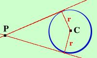

|
Come hai visto il metodo indicato per trovare le equazioni dell rette tangenti condotte da un punto alla circonferenza e' piuttosto complicato come calcoli anche se interessante dal punto di vista teorico In alcuni istituti tecnici ho visto usare il metodo seguente:  la retta tangente alla circonferenza sara' la retta del fascio tale che la sua distanza dal centro e' uguale al raggio Quindi, applicando la formula della distanza da un punto ad una retta impongo che nel fascio di rette la distanza dal centro sia uguale al raggio: trovero' cosi' i valori di m che sostituiti nel fascio mi danno l'equazione delle tangenti Particolarmente facile e' applicare questo metodo quando il centro del fascio e' sulla circonferenza Vediamo ad esempio di applicare questo metodo ad un esercizio gia' fatto in precedenza Trovare le tangenti alla circonferenza  x2+
y2
-10y + 16 = 0
x2+
y2
-10y + 16 = 0
condotte dall'origine O(0,0) E' la circonferenza di centro C(0,5) e raggio 3 Per trovare l'equazione delle rette tangenti considero il fascio di rette con centro l'origine y = mx ed impongo che la distanza del fascio da C(0,5) sia uguale a 3 (raggio) y0 - mx0 - q d = ---------------------- = 3 
 (1 + m2) (1 + m2)Sostituisco i valori che ho x0=0 y0=5 q=0 m=m 5 - m·0 - 0 ----------------- = 3 
 (1 + m2) (1 + m2)5 ---------------- = 3
(1 + m2)Faccio il minimo comune multiplo per togliere il denominatore (posso farlo senza condizioni perche' e' certamente diverso da zero essendo radice di somma di due quadrati) 5 = 3
(1 + m2)
Elevo al quadrato da entrambe le parti 25 = 9(1 + m2) 25 = 9 + 9m2 9m2 = 25 - 9 9m2 = 16 m2 = 16/9 m = Le due rette tangenti sono: y = 4/3 x y = -4/3 x Vediamo anche un esempio con il punto sulla circonfernza (anche qui riprendiamo un problema gia fatto) Trovare l' equazione della tangente alla circonferenza  x2+
y2
- 25 = 0
x2+
y2
- 25 = 0
condotte dal suo punto P(3,4) E' la circonferenza di centro O(0,0) e raggio 5 Per trovare l'equazione della retta tangente considero il fascio di rette passante per il punto P(3,4) y - 4 = m(x - 3) y = mx -3m + 4 impongo che la distanza del fascio da C(0,0) sia uguale a 5 (raggio) y0 - mx0 - q d = ---------------------- = 5
(1 + m2)Sostituisco i valori che ho x0=0 y0=0 q= -3m + 4 m=m 0 - m·0 + 3m - 4 ---------------------- = 5
(1 + m2)Faccio il minimo comune multiplo per togliere il denominatore (anche qui posso farlo senza condizioni perche' e' certamente diverso da zero essendo radice di somma di due quadrati) 3m - 4 =
5(1 + m2)Elevo al quadrato da entrambe le parti per far sparire la radice 9m2 - 24m + 16 = 25 + 25m2 Porto i termini prima dell'uguale, sommo e cambio di segno 16m2 + 24m + 9 = 0 Come c'era da aspettarsi il termine prima dell'uguale e' un quadrato essendo il punto sulla circonferenza Nota (4m + 3)2 = 0 4m + 3 = 0 m = - 3/4 per ottenere la tangente sostituisco questo valore a m nel fascio y = mx -3m + 4 y = -3/4 x -3·(-3/4) + 4 L'equazione e' 3 25 y = - ---- x + ----- 4 4 |

|

|

|

|